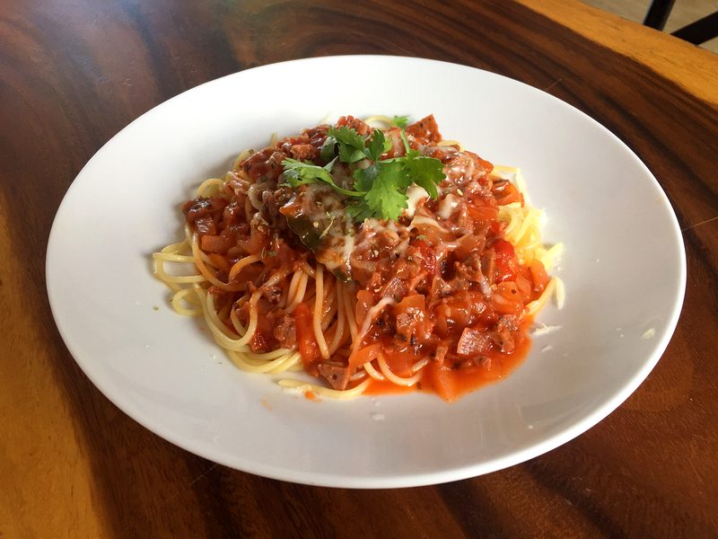
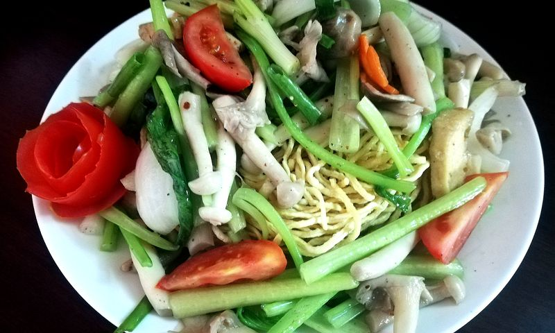
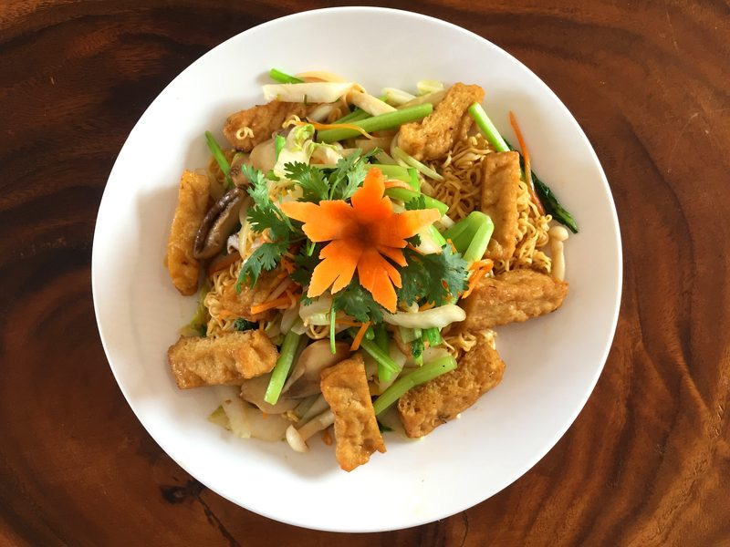
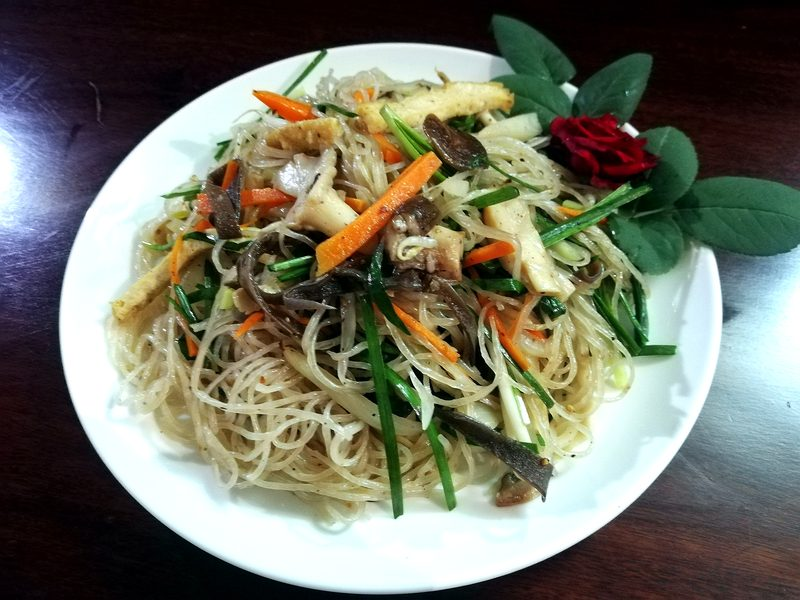

Spaghetti
ảnh riêng

Crispy fried noodles
ảnh riêng

Soft fried noodles
ảnh riêng

Stir-fried glass noodles
ảnh riêng
Chưa có ảnh
Italian-style macaroni
CHƯA CÓ
Chưa có ảnh
Herbal mushroom noodle soup
CHƯA CÓ

Extra-crispy pan-fried noodles
ảnh riêng
Chưa có ảnh
Singapore rice vermicelli
CHƯA CÓ